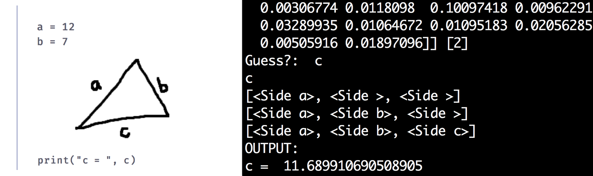

Billboard.js Open Source Contribution - Label Overlap Prevention
Open source contribution to Billboard.js, a javascript data visualization library. I created a plug in which prevents chart/data labels from overlapping by calculating their optimal placement using a voronoi layout. Specs: https://naver.github.io/billboard.js/release/latest/doc/plugin-textoverlap.html
Image SourceNotational Programming Research
Available programming languages strive for clear mappings between natural language and formal syntax; nonetheless, conventional programming becomes increasingly unintuitive when utilized within visual or scientific fields involving diagrams and diagrammatic notations. Moreover, visual programming languages usually serve only specific domains, or do not effectively support expert-level engineering practices. This paper reports on preliminary research exploring the design and implementation of handwritten programming paradigm, considering existing languages and human computer interaction (HCI) principles. Utilizing both notation and geometric figures, our research hopes to explore new ways of programming by questioning the historically- and culturally-situated centrality of typing code.
Wind Sculpture
3D printed a small scale wind sculpture using Fusion 360. When assembled, the spinners should rotate around the ring when in the presence of wind. This project was inspired by a similar kinetic wind sculpture created by Anothy Howe.
Keo Game (in development)
Top down 2D pixel Game in progress! Using unity we approach building an open world combat game where one plays as "Keo", a kid who can turn into the animals he kills. Created concept art and a few initial versions of characters, animals, and background elements for the game.